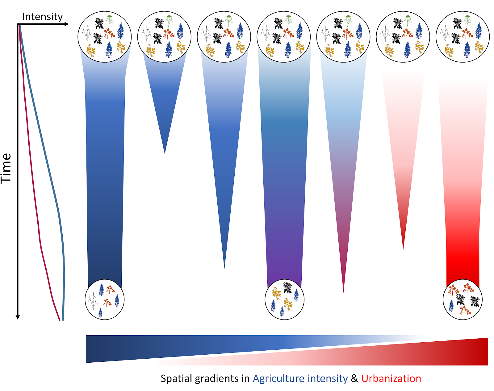

Global change & Biodiversity
Temporal dynamics of biodiversity
Long-term monitoring schemes only exist for a few taxonomical groups, and often start after current anthropogenic perturbations have already reached half of their current magnitude (Mihoub et al. 2017). Thus, Ecology struggles to assess how each global change drivers affects biodiversity over time, our knowledge mainly coming from spatial comparisons among areas with distinct levels of disturbance, which can be misleading (see below).
A part of my researches try to take advantage of recent open databases gathering millions of occurrence records, regarding a wide diversity of taxa, to overcome this limit. Coupled with appropriate statistical analysis those “opportunistic” datasets could help us to turn back the clock and estimate how biodiversity change over the last century. Basically, I focus on how abundance, distribution and phenology (i.e. seasonal life-cycle event such as annual migration or spawning) of species are affected by different components of global change: climate change, agricultural intensification, urbanization, etc. Then, assembling these species responses to global change over time, I try to study upper levels of organization, such as species assemblages or communities.

Figure 1: graphical abstract of Duchenne et al. (2020). In this paper we tried to assess the links between species responses (phenology and occupancy) and different global change drivers, to then assess how these changes affect species assemblages over time.
Why space-for-time substitution can be misleading?
Assessing how global change, a temporal process, affects biodiversity by a space-for-time-substitution can be misleading because it neglects site history, local adaptation and the diffusion of perturbations over habitats and landscapes. Indeed, by neglecting what became extinct because of global change before present, space-for-time substitution approaches are based on a strongly bias sampling of biodiversity, compared to pre-global change reference. Moreover, in western countries, especially in Europe, almost every landscapes and habitats have been affected by recent anthropogenic perturbations, spatial gradients only reflect damaged habitats gradients. Using space-for-time substitution only to infer the effects of global change on biodiversity is similar to studying evolution of the life without considering paleontological records. Those records provide important information about what was present but is no longer present. Neglecting the cemetery of evolution [2] leads to misunderstanding evolution, and similarly neglecting temporal data in global changes studies leads to misestimate global change effects on biodiversity (Figure 2).
[2] "But just in proportion as this process of extermination has acted on an enormous scale, so must the number of intermediate varieties, which have formerly existed, be truly enormous. Why then is not every geological formation and every stratum full of such intermediate links? Geology assuredly does not reveal any such finely graduated organic chain; and this, perhaps, is the most obvious and serious objection which can be urged against the theory. The explanation lies, as I believe, in the extreme imperfection of the geological record." Charles Darwin

Figure 2: Time series vs space-for-time substitution to infer global change effects on biodiversity. Schematic represenation of the temporal dynamics of an historical homogeneous landscape with 7 identical plant communities under a global change scenario involving agricultural intensification (blue gradient) and urbanization (red gradient). The temporal dynamics of global change drivers are presented on the left, while their spatial gradients are presented at the bottom. The size of the circles is proportional to the community diversity. Four communities collapsed before current time, while three of them persisted. By comparing diversity along the spatial gradients at current time, no signal would be observed because the three communities have the same diversity and because we missed collapsed communities. In contrast studying the system over time would reveal a strong negative effect of agricultural intensity and urbanization on plant diversity.